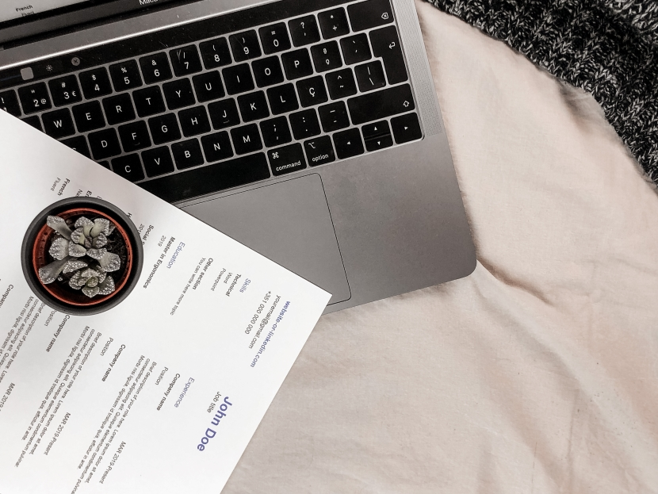

Curriculum Vitae.
Ik ben bio-ingenieur van opleiding, werkte 4 jaar aan mijn doctoraat. Nu werk ik binnen de IT als power platform developer.
Lees meer.Verandering van werelden.
Na mijn doctoraat veranderde mijn wereld van een academische naar de industrie.
Lees meer.

Reis de wereld rond.
Ik hou ervan de wereld te zien. Vooral noorderlijke bosrijke gebieden hebben mijn hart gestolen.
Lees meer.